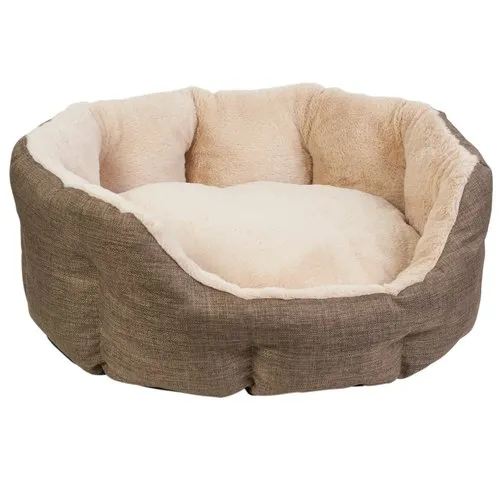
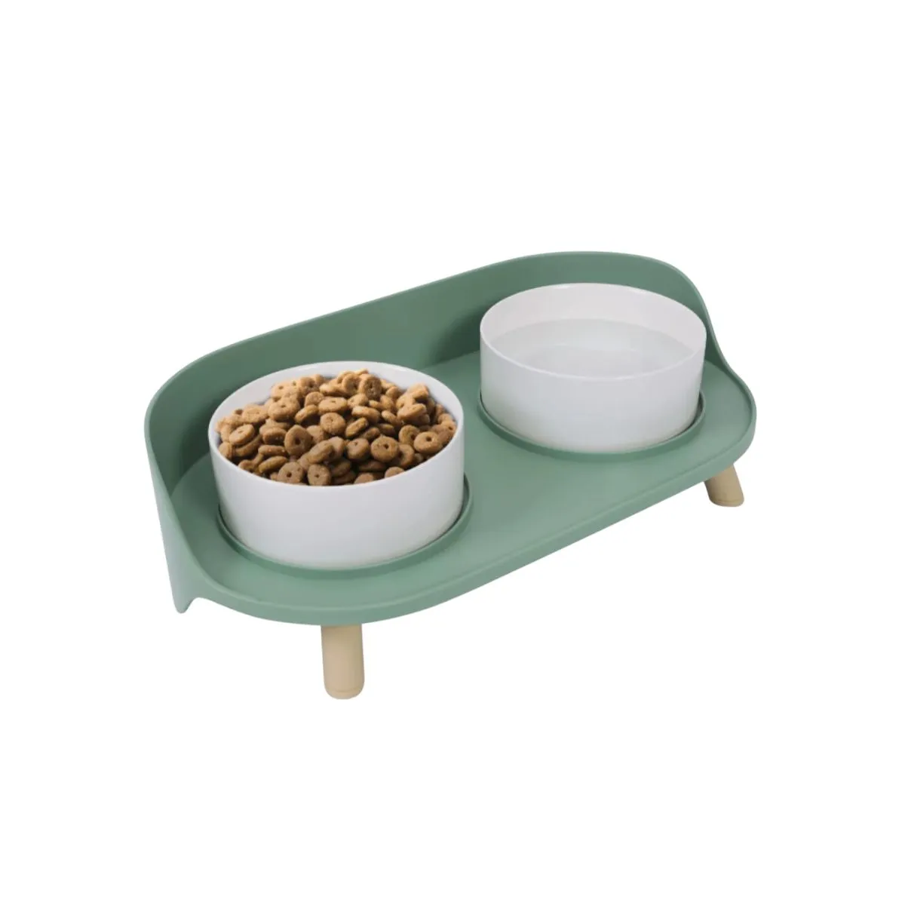
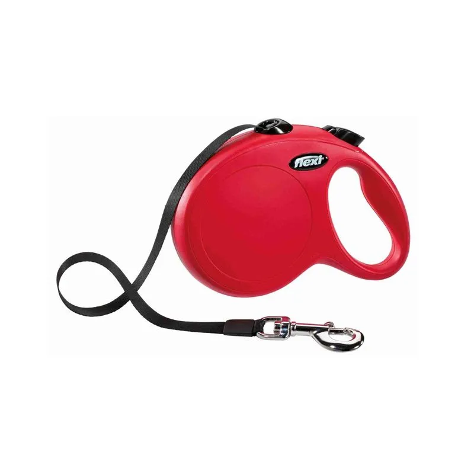
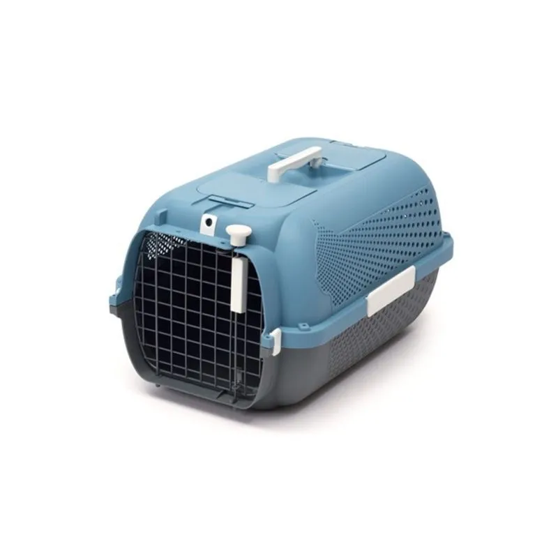

Cama para mascota
La cama redonda DreamWell Cuddle Dogit ofrece comodidad y aislamiento del frío y la humedad. Tiene interior de felpa beige, exterior de poliéster gris acolchado, es lavable a mano y mide 56 cm.
Precio: $12.400

Comedero doble
Comedero bebedero para perros o gatos. De plastico y ceramica, color verde y blanco. Dimensiones: 37x19x11cm.
Precio: $3.599

Correa retractil
La correa New Classic Cinta Flexi es retráctil, extensible hasta 5 metros y soporta perros de hasta 20 kg. Ofrece libertad controlada gracias a su sistema de frenado intuitivo. Durable y disponible en distintos tamaños y colores, se adapta a tu mascota y estilo.
Precio: $5.400

Transportadora
La Transportadora Voyageur es ideal para transportar mascotas en coche, autobús, tren o avión. Es durable, segura y cuenta con ventilación óptima, puerta superior, bloqueo de resorte y pestillo lateral. Apta para gatos de hasta 27 cm de altura.
Precio: $10.400